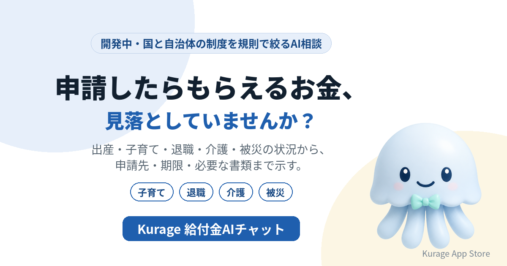

申請したらもらえるお金を状況からAIに聞ける「給付金AIチャット」を開発中——子育て・退職・介護・被災
給付金や手当の多くは、自分で申請しないと受け取れません。いまの状況から、申請できる制度と申請先・期限・必要な書類を示すAI相談システムを開発しています。名前は Kurage 給付金AIチャット です。

- 詳しい説明: Kurage 給付金AIチャット（開発中）
- Kurage App Store の掲載: Kurage 給付金AIチャット
まだシステムはありません。先に入口のページだけを公開し、使いたい方からの問い合わせやアクセスを見てから作ります。
「申請したらもらえるお金」を探している人がいる
キーワードプランナーで測ると、こういう語が検索されています。
- 子育て支援金: 40,500
- 子育て世帯給付金: 12,100
- 申請したらもらえるお金: 1,000
- 退職したらもらえるお金: 1,000
「申請したら」「退職したら」と、状況を先に打つ検索が目立ちます。知りたいのは制度の名前ではなく、「自分の場合に何があるか」です。ところが制度は、国・都道府県・市区町村、それに雇用保険や年金と、窓口ごとに分かれて書かれています。
状況から、申請先・期限・書類まで
予定している答え方は次のとおりです。
- 子どもが生まれる — 出産育児一時金、児童手当、自治体の子育て支援など、状況に合う制度を、申請先・期限・必要な書類とともに示します。
- 会社を辞めた — 雇用保険の基本手当（いわゆる失業給付）、国民健康保険・国民年金への切り替えと、保険料の減免・免除など、退職後の手続きを期限の順に並べます。
- 親の介護が始まった — 要介護認定の申請、介護休業給付、高額介護サービス費など、介護する人・される人それぞれの制度を示します。
- 災害で家が壊れた — 罹災証明書の申請から、被災者生活再建支援金・住宅の応急修理などを、内閣府の被災者支援制度の一覧にもとづいて示します。
受給できるかは判定しない
制度ごとの対象・期限・申請先を規則として持ち、入力された状況に当てはめて候補を絞ります。AIはその結果を言い換えるだけで、存在しない制度や金額を作りません。
受給できるかどうかの最終判断は、各制度の窓口がします。このシステムは「候補と申請先を示す」ところまでにします。金額や条件が変わる制度は、出典と確認した日を添えて、窓口で確かめるよう促します。
土台はもうある
- Kurage 制度ナビ — 困りごとから使える制度・申請先・期限を引く。名古屋市の45制度を取り込み済み
- Kurage 被災者支援ナビ — 被災したときの国の支援制度を状況から
- Kurage AfterCare Navi — 身内が亡くなったあとの手続きを状況から絞る
- Kurage 補助金ナビ — 事業者向け。会社の条件から、いま出せる補助金
作る前に、入口だけを出した理由
制度は地域ごとに違います。どの地域の、どの窓口で使うかが決まらないと、取り込む制度の範囲が決まりません。自治体の窓口、社会福祉協議会、議員事務所、会社の人事——使いたい方の声を聞いてから、開発の順番と仕様を決めます。
使ってみたい方へ
対象の地域と必要な制度を伺って仕様を決めます。お気軽にお問い合わせください。